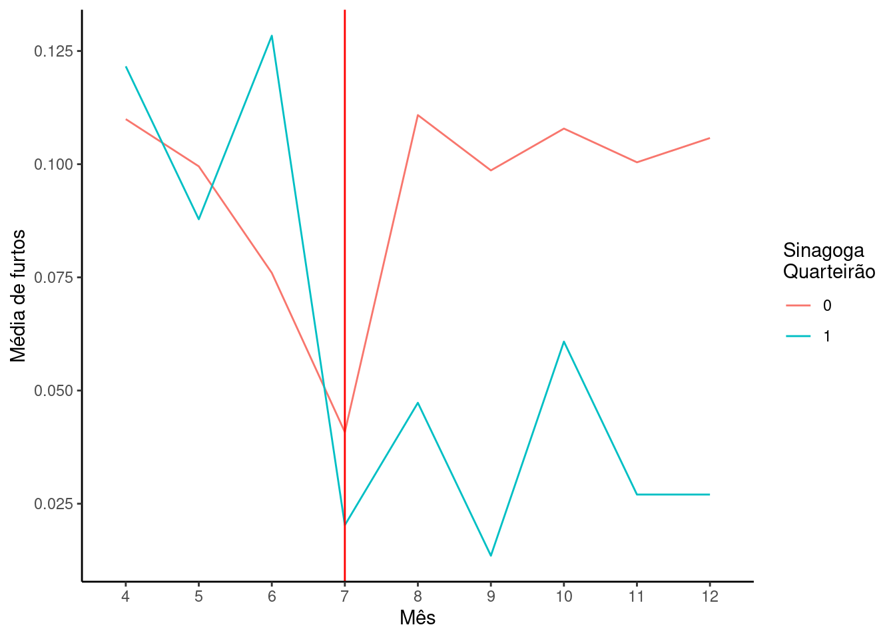
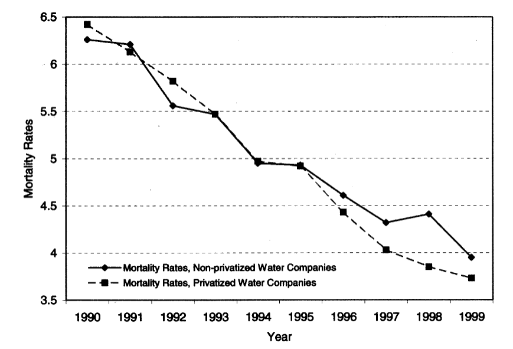
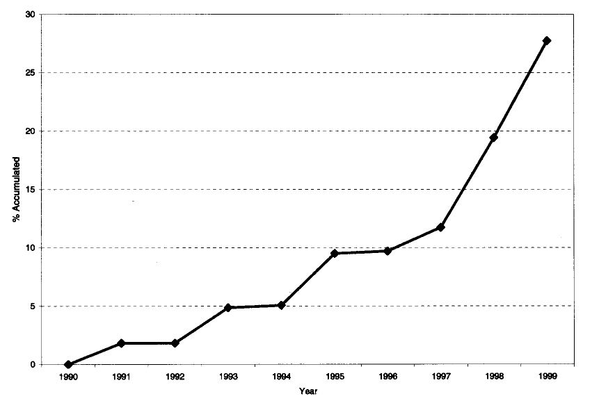
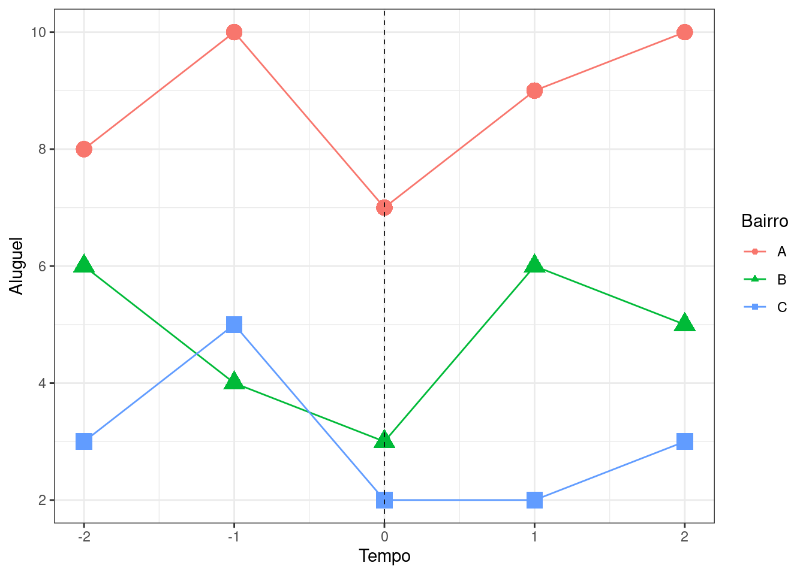

Econometria III
Questões - Diferenças em diferenças
Questão 1
Assinale Verdadeiro ou Falso:
Diferença em Diferenças (DID):
(\(\phantom{X}\)) Diferença em Diferenças (DID) requer pelo menos dois grupos de tratamento e dois grupos de controle.
(\(\phantom{X}\)) DID ajuda a controlar variáveis não observadas invariantes no tempo que podem afetar os grupos de tratamento e controle de forma diferente.
(\(\phantom{X}\)) DID estima o efeito médio do tratamento nos tratados (ATT) comparando a diferença nos resultados entre os grupos de tratamento e controle antes e depois do tratamento.
(\(\phantom{X}\)) DID pode ser usado quando a atribuição de tratamento é baseada em um projeto de experimento aleatorizado (RCT).
(\(\phantom{X}\)) DID assume que não há efeitos de contaminação do grupo de tratamento para o grupo de controle ou vice-versa.
(\(\phantom{X}\)) DID se baseia na suposição de tendências paralelas, que afirma que, na ausência de tratamento, os grupos de tratamento e controle teriam seguido caminhos paralelos ao longo do tempo.
(\(\phantom{X}\)) DID pode ser usado quando o tratamento ocorre em diferentes pontos no tempo para diferentes unidades.
Efeitos aleatórios:
(\(\phantom{X}\)) Os efeitos aleatórios assumem que as características não observadas específicas do indivíduo estão correlacionadas com as variáveis explicativas.
(\(\phantom{X}\)) Os efeitos aleatórios utilizam uma transformação para quasi-centralizar os dados na média e então realiza um MQO Factível para fazer as estimativas.
(\(\phantom{X}\)) Os efeitos aleatórios são mais eficientes do que os efeitos fixos quando os efeitos individuais específicos não observados não são correlacionados com as variáveis explicativas.
Questão 2
Em 2004, Rafael Di Tella e Ernesto Schargrodsky publicaram um estudo que analisava o efeito do aumento da presença policial no crime. Para medir esse efeito, Di Tella e Schargrodsky alavancaram um quasi-experimento. Após um atentado à bomba na sinagoga em Buenos Aires em 18 de julho de 1994, a polícia municipal foi designada para proteger as sinagogas ao redor da cidade. O aumento das patrulhas policiais em alguns quarteirões da cidade, mas não em outros, significa que há, sem dúvida, um grupo de tratamento e um grupo de controle para o aumento da presença policial, que Di Tella e Schargrodsky usaram para medir o efeito de policiais extras em roubos de carros.
Estes são dados não experimentais que incluem contagens de roubos de carros para cada quarteirão de Buenos Aires de abril a dezembro de 1994. Existem 12 variáveis:
observ(vamos renomear parablock): O número de ID do quarteirãobarrio: O bairro (bairro) para o quarteirãocalle: A rua do quarteirãoaltura: O número da ruainstitu1(vamos renomear parasame_block): Variável indicadora marcando se há uma instituição judaica no quarteirão (1 se sim, 0 se não)institu3: Variável indicadora marcando se há uma instituição judaica dentro de um quarteirão (1 se sim, 0 se não)distanci(vamos renomear paradistance): Distância até a instituição judaica mais próxima, medida em quarteirãoedpub: variável indicadora marcando se há um prédio educacional ou embaixada no quarteirão (1 se sim, 0 se não)estserv: Variável indicadora marcando se há posto de gasolina no quarteirão (1 se sim, 0 se não)banco: Variável indicadora marcando se há banco no quarteirão (1 se sim, 0 se não)totrob(vamos renomear paracar_theft): Número total de roubos de carrosmes(vamos renomear paramonth): Mês
- Imagine que você saiu e coletou dados sobre a presença de policiais em cada cidade e a quantidade de crimes em cada cidade e encontrou uma relação positiva. Isso significa que a polícia causa o crime? Explique.
Di Tella e Ernesto Schargrodsky exploram essa questão com um design de diferença-em-diferenças. Eles coletaram dados sobre a presença de policiais e roubos de carros nos quarteirões da cidade de Buenos Aires antes e depois do ataque. O interesse deles é ver se a polícia extra reduziu a quantidade de roubos de carros.
Como esses dados são adequados para um projeto DID? O que estaríamos comparando aqui? Seja específico sobre os grupos pré/pós e tratamento/controle.
Por que o fato de a polícia ter sido enviada para certos quarteirões por causa de ataques terroristas ajuda na identificação do efeito causal?
O que você diria sobre a suposição de tendências paralelas na Figura 1 abaixo? Qual o problema em as tendências não serem paralelas?
- Calcule a estimativa de diferença em diferença dados esses números.
| Antes | Depois | |
|---|---|---|
| Quadra sem Sinagoga | 0.0815703 | 0.104708 |
| Quadra com Sinagoga | 0.089527 | 0.0351351 |
Verifique os resultados de uma regressão na Tabela 2 e responda:
Qual equação de regressão foi estimada?
Se esta é uma regressão com efeitos fixos, por que o intercepto é reportado?
Identifique o coeficiente relativo ao efeito causal DID. É igual ao calculado no item e)?
| (1) | |
|---|---|
| (Intercept) | 0.082 |
| (0.004) | |
| after | 0.023 |
| (0.006) | |
| same_block | 0.008 |
| (0.020) | |
| after x same_block | -0.078 |
| (0.027) | |
| Num.Obs. | 7884 |
| R2 Adj. | 0.003 |
Questão 3
No artigo “Water for Life: The Impact of the Privatization of Water Services on Child Mortality” de Galiani, Gertler, e Schargrodsky (2005), os autores examinaram o impacto da privatização da água na mortalidade infantil na Argentina. O estudo constatou que a privatização dos serviços de água levou a uma redução significativa na mortalidade infantil, com uma redução geral de 8% e uma redução de 26% nas áreas mais pobres. O efeito foi observado principalmente na redução de mortes por doenças infecciosas e parasitárias, relacionadas às condições da água. Essas descobertas sugerem que a privatização dos serviços de água pode ter um impacto positivo nos resultados da saúde infantil.
Os autores utilizaram dados de painel com o status socioeconômico dos municípios incluindo covariáveis invariantes no tempo, PIB per capita, desigualdade de renda e desemprego e um conjunto de características como a proporção de domicílios com necessidades básicas não atendidas (UBN), características de moradia, e características demográficas dos chefes de família para toda a década de 1990. Estes dados permitiram analisar os efeitos antes e depois da privatização. Para explicar possíveis fatores de confusão, os autores usaram a estimativa de diferenças em diferenças, controlando várias variáveis socioeconômicas e efeitos fixos regionais.
Entre 1991 e 1999, cerca de metade das empresas públicas de água que atendiam a 28% dos municípios do país e cobriam quase 60% da população do país foram transferidas para controle privado com fins lucrativos. Os demais municípios continuaram recebendo serviços de água de empresas públicas ou cooperativas sem fins lucrativos.
A Figura @ref(fig:galiani-tendencias) mostra a relação entre taxas de mortalidade infantil para os municípios que não tiveram seus serviços de abastecimento de água privatizados versus aqueles que o tiveram.

Com base nesta figura e, considerando que anos anteriores a 1995 o efeito das privatizações ainda não era relevante pois houveram poucas até esta data, explique porque um design de DID pode ou não ser crível nesta situação. (1,0 ponto)
Considere uma variável indicadora de privatização (\(D_{it}=1\)) e um vetor de variáveis de controle (\(\textbf{X}_{it}\)). Explique que tipo de preocupação os autores tiveram para não estimar uma regressão do tipo MQO agrupado nos dados obtidos? Uma regressão da seguinte forma:
\[y_{it}=\beta_0+\textbf{X}_{it}\boldsymbol\beta+\delta D_{it}+\varepsilon_{it}.\]
Onde \(y_{it}\) refere-se a taxa de mortalidade infantil no município \(i\) no ano \(t\). (1,0 ponto)
A Tabela @ref(tab:galiani-resultados) apresenta uma parte dos resultados obtidos com o estudo. A variável “Privatizado” é a dummy de tratamento (\(D_{it}=1\) quando município \(i\) no ano \(t\) tem serviços de água privados). As colunas (1) a (3) apresentam os resultados para diferentes especificações do modelo. Interprete os resultados obtidos e discorra sobre a robustez dos resultados para diferentes especificações. (1,0 ponto)
Os resultados na Tabela @ref(tab:galiani-resultados) são oriundos de uma regressão de efeitos fixos em duas vias (TWFE - modelo abaixo) e dados em números de mortes para cada mil crianças de até 5 anos de idade. Quanto de redução percentual represetam os coeficientes dos modelos (1) a (3) com relação a taxa de mortalidade em 1990? (1,0 ponto)
\[y_{it}=\delta D_{it}+\lambda_i+\mu_t+\textbf{X}_{it}\boldsymbol\beta+\varepsilon_{it}.\tag{TWFE}\]

- A Figura @ref(fig:galiani-adocao) apresenta o número de municípios com serviços de água privatizados. Neste caso a regressão TWFE estimada pelos autores e os resultados apresentados na Tabela @ref(tab:galiani-resultados) continuam válidos? Por quê? (1,0 ponto)
Questão 4
Suponha que você observe os aluguéis cobrados em três diferentes bairros (A, B e C) de Florianópolis ao longo do tempo, e que um shopping center tenha sido construído no instante \(t=0\) no bairro A:

Qual o melhor bairro para servir de grupo de comparação (controle) para o bairro A se quisermos estimar o impacto da chegada do shopping center no preço dos alugueis por diferenças-em-diferenças? Por quê? (1,0 ponto)
Faça a estimativa pontual do efeito do shopping center no preço dos alugueis no bairo A. Considere como período pré \(t=-1\) e período pós \(t=1\). (1,0 ponto)
Para a estimação do item b) qual deve ser o teste placebo a ser realizado para a verificação das tendências paralelas? Calcule a estimativa DID do teste placebo e verifique se é igual a zero. (1,0 ponto)
Referências
Galiani, Sebastian, Paul Gertler, e Ernesto Schargrodsky. 2005. “Water for life: The impact of the privatization of water services on child mortality”. Journal of political economy 113 (1): 83–120.